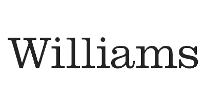

Services
WE MEET YOU WHERE YOU ARE
AND CHART A COURSE TO WHERE YOU WANT TO BE
SSC helps building owners, developers, and design team members identify and evaluate sustainable strategies for new construction and renovation projects.
Decarbonization and
Net Zero Services
Soden Sustainability Consulting offers tailored strategies to help clients achieve carbon reduction goals. We assist with whole building & materials life cycle assessments, provide paths to net zero, and guide projects through compliance with evolving environmental regulations. With a focus on thorough assessment, monitoring, and reporting, Soden supports project teams in making substantial strides towards a net-zero carbon portfolio.
Green Building
Certification Guidance
Having achieved certification for over 100 green buildings, Soden Sustainability Consulting assists clients in setting goals and achieving various green building certifications. Certifications include LEED, WELL, Fitwel, CHPS, and Living Building Challenge. We provide guidance and support to ensure that each building project meets both its unique goals and the stringent requirements for their desired certification(s). Our company aids in selecting sustainable strategies, materials, and details that align with applicable requirements and standards, ultimately helping clients attain the highest levels of sustainable certifications.
Stategic Analysis
& Visioning
Soden works alongside architects, engineers, and project owners to develop, tailor, and implement sustainable design strategies. Through workshops and collaboration, we integrate eco-friendly design strategies into building projects to maximize energy & water efficiency, reduce environmental impact, and create healthier indoor environments.
Sustainability Standards
& Permitting
With decades of experience partnering with corporations, institutions, and policymakers, our team continually drives the advancement of green architecture. Our seasoned familiarity with local standards and regulations helps streamline the permitting process. Our expertise is honed through our past work with local governments, having been directly involved in crafting the robust sustainability guidelines that actively support and enhance local permitting and construction processes today.
Integrated
Project Management
Our integrated project management approach facilitates open communication between all disciplines on a project. Recognizing the multidisciplinary nature of sustainability, our team fosters synergies that produce innovative design strategies to accomplish project goals. We facilitate project coordination, ensuring that sustainable design principles are effectively and efficiently integrated into every phase of a building project, while simultaneously educating stakeholders and innovating in the process.
Customized
Sustainability Solutions
Our company tailors its services to meet the specific needs and goals of each client. Soden Sustainability Consulting provides customized sustainability solutions that align with the unique requirements of individual projects, taking into account factors such as location, building type, client objectives, and local regulations.
Our Clients
-

-

-

-

-

-

-

- 